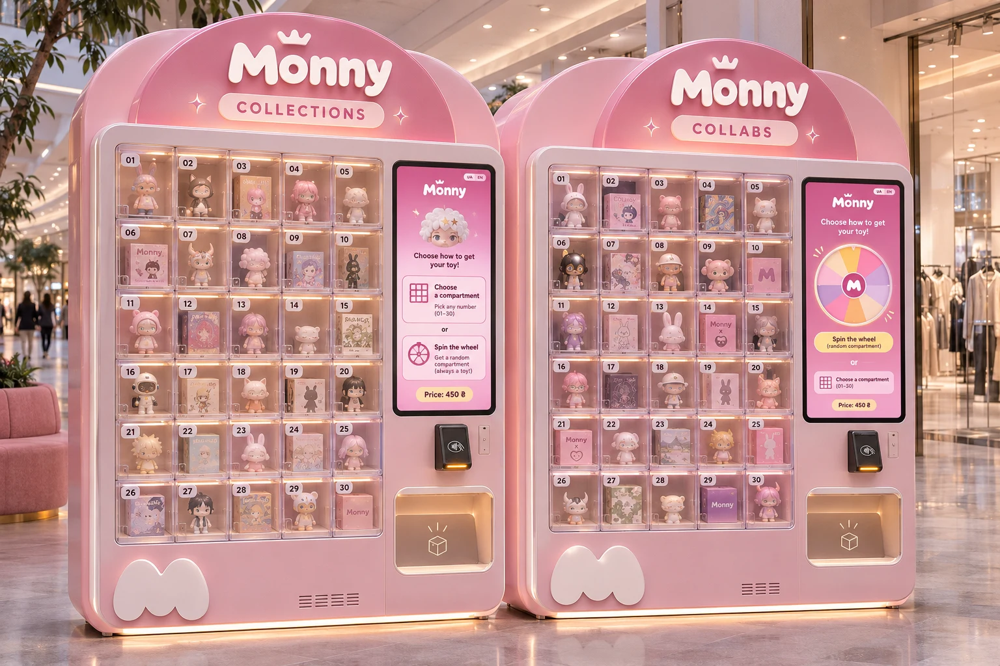
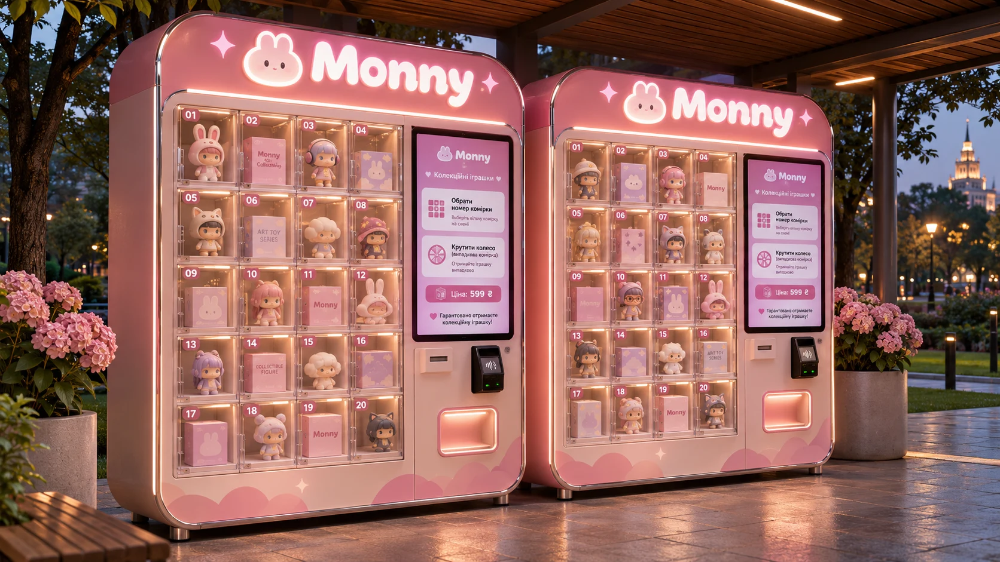

Обери комірку
Знайди номер комірки, яка тобі сподобалась, і обери його на екрані автомата.
Закрита коробочка залишається сюрпризом: номер комірки не гарантує певного персонажа всередині.COLLECT LITTLE JOYS · ХАРКІВ
Зустрічай Monny — рожеві автомати з іграшками, які хочеться збирати. Обирай свою комірку або довірся сюрпризу.

Новий спосібЗНАЙОМСЯ ЗІ СВОЇМИ МАЙБУТНІМИ УЛЮБЛЕНЦЯМИ
Мініатюрні світи, незвичайні персонажі
та місце для ще однієї іграшки на полиці.
Творчий каталог Monny: назви й персонажі ілюстративні. Асортимент, ліцензії та ціни підтвердимо перед запуском.
Поки нічого не знайшлося. Спробуй іншу назву або додай іграшки в обране.
ТРОХИ МАГІЇ, УСЕ ПРОСТО
Спочатку обери режим, потім оплати.
Обидва режими мають однакову фіксовану ціну.
Знайди номер комірки, яка тобі сподобалась, і обери його на екрані автомата.
Закрита коробочка залишається сюрпризом: номер комірки не гарантує певного персонажа всередині.Колесо випадково обирає номер доступної комірки. Після успішної оплати отримуєш свою іграшку.
Це демонстрація без оплати та призів.ЗнайдиПереглянь колекції та локації.
Обери й оплатиЦіну та способи оплати побачиш на автоматі до покупки.
Забери радістьПісля успішної оплати автомат видає іграшку з обраної комірки.
НАСТУПНА ЗУПИНКА — ХАРКІВ
Дві попередні зони розміщення в одному ТРЦ.
Автоматів Monny за цими адресами поки немає.
ЩО НОВОГО У СВІТІ MONNY
Показуємо, як може виглядати Monny: прозорі комірки, м’яке світло та улюбленці на будь-який настрій.

ПЛАНИДосліджуємо формати розміщення. Дата відкриття та партнери ще не оголошені.
Зберігай улюбленців сердечком у каталозі. Обране залишиться в цьому браузері до твого наступного візиту.
Зібрати список бажаньМИ ПОРУЧ І ПІСЛЯ ПОКУПКИ
Зібрали відповіді, щоб перше знайомство
з Monny було легким.
Після запуску тут з’явиться канал підтримки. Збережи номер автомата, час оплати й підтвердження платежу.
Так, концепція Monny передбачає іграшку після кожної успішної покупки. Колесо обирає комірку, а не шанс на отримання товару. Якщо виникла помилка видачі, потрібне звернення до підтримки.
Ні. В одному автоматі вибір номера та випадковий вибір мають однакову ціну. Актуальна сума буде показана до оплати.
Сайт допомагає ознайомитися з асортиментом і знайти автомат. Онлайн-оплата, доставка та бронювання не передбачені.
Якщо іграшка видима, можна обрати її комірку. Якщо вона в закритій упаковці, персонаж залишається сюрпризом і може повторитися.
Monny — проєкт на етапі підготовки. Діючі точки та дату запуску ще не оголошено. Для пілоту розглядаємо ТРЦ NIKOLSKY та альтернативну зону Smile Park у цьому ж комплексі. Карта показує заклади-кандидати, а не встановлені автомати.
Це ілюстративні персонажі для презентації майбутнього бренду. Вони не підтверджують наявність товарів, цін чи укладених партнерств.